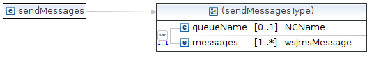
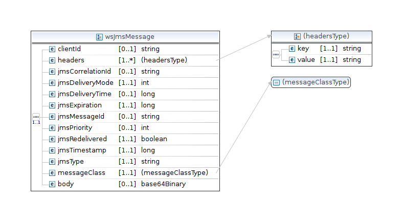
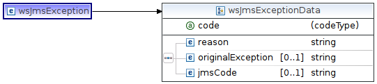

- Last Published: 2017-02-05|
- Version: 0.1.1-SNAPSHOT|
- Soap To Jms/
- Send Messages to a queue
- | Github project
-


Input parameters (sendMessages)

- queueName: name of the queue on the server where to send messages. If not configured it corresponds to the configured queue name minus the java:comp/env prefix.
- messages : array of wsJmsMessage.

- clientId : unique message id used for deduplication.
- headers : jms message headers. A special note on the <value> field: it is composed by two parts separated by ";". The first part is an enum indicating the java type of the second part. For instance a String property will have the following <value> field: "STRING;....". Allowed values for the first field are listed in PropertyTypeEnum class.
- jmsMessageId : do not use in sending messages.
- jms* fields : same as the corresponding Message class in jms API.
- messageClass : an enum identifying the type of the message to be sent. It can have the following values: TEXT (a TextMessage will be inserted into the queue), MAP, BYTES, STREAM, OBJECT.
Exception
The SOAP service throws an exception when a server error happens. When this happens no message is delivered to the queue.

- code : exception code (see StatusCodeEnum). Can be any of the following:
- ERR_GENERIC : Generic error code.
- ERR_INCOMPATIBLE_PROTOCOL : Server and client protocol doesn't match.
- ERR_SERIALIZATION : Problem in serialization of parameters.
- ERR_JMS : JMS internal server error.
- ERR_MALFORMED_URL : Problem in parsing web service url.
- ERR_NETWORK : Reserved: Network error. Should not happen.
- ERR_QUEUE_NOT_FOUND : the queue name provided by the client was not found on the server.
- reason : a string containing human readable description of the error.
- originalException : if this error is generated by a server internal exception (for instance JMS provider threw exception), this field contains the original exception and message is reported in this field.
- jmsCode : if the exception is generated by the JMS provider report the original JMS error code.
Complete WSDL
- Send message to a queue wsdl: queueSender.wsdl
- Common data types: dataTypes.xsd
Read Messages  Protocol
Protocol